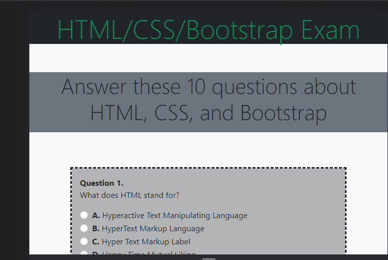
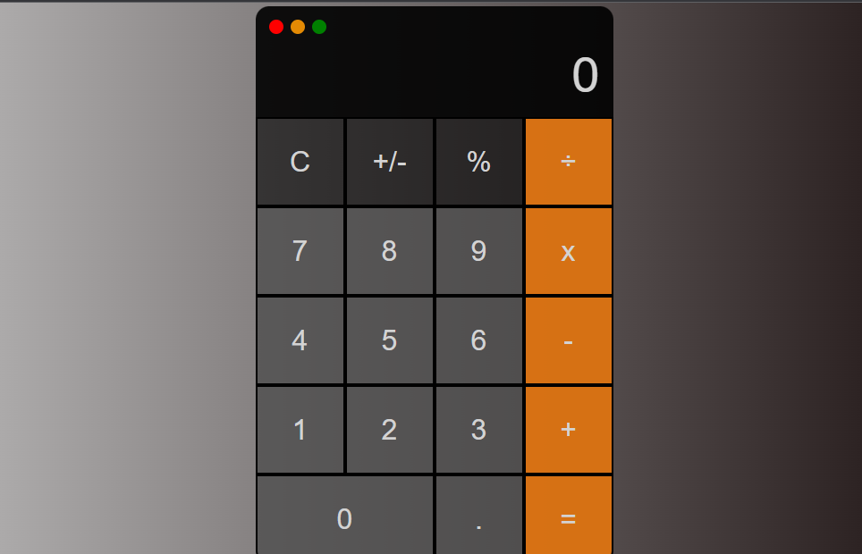
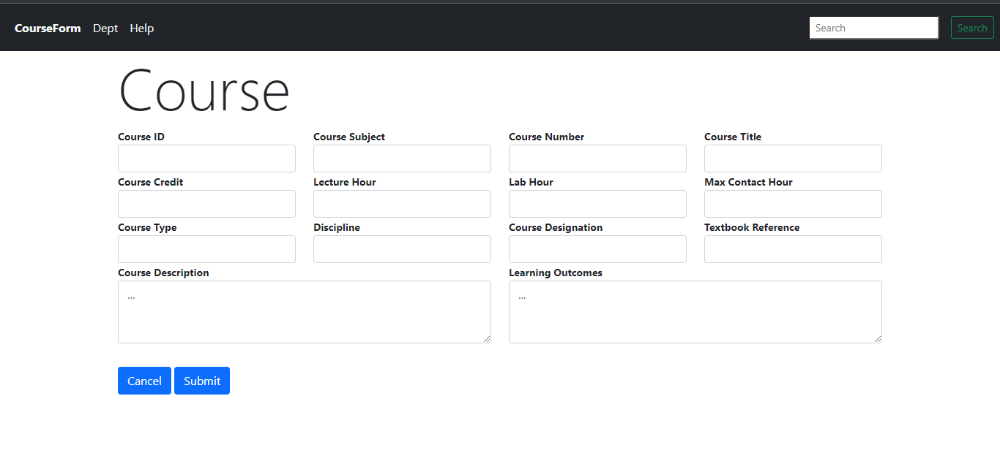

Java Programmer and Web Application Developer!
I have experience in many different capacities in my years of work, from warehouse and transportation to sales and restaurant management. I decided when the pandemic hit to venture on a new path, computer programming. My goals are to become a Full Stack Developer. I am a highly motivated Computer Programmer with experience and extensive education in application development. Possess excellent communication and interpersonal skills. A fast learner with strong time management and multitasking skills. Strong work ethic in team or individual settings to drive process efficiency. Seeking to enter the Information Technology field. Deep passion for computer programming. Strong troubleshooting and problem-solving skills with an analytical mindset
Some things that I've been working on
My resume created with HTML & CSS only. Contact me if interested in working together.
Quiz assignment created with Bootstrap, HTML, CSS and JavaScript.
Calculator project created with only HTML, CSS, and JavaScript
My very first static webpage project creating a course page
Video for my Java application for converting measurements
Feel free to get in touch with me here:
"Many dreams come true, and some have silver linings. I live for my dreams and a pocketful of gold."
Over the Hills and Far Away Written by Jimmy Page, Robert Plant